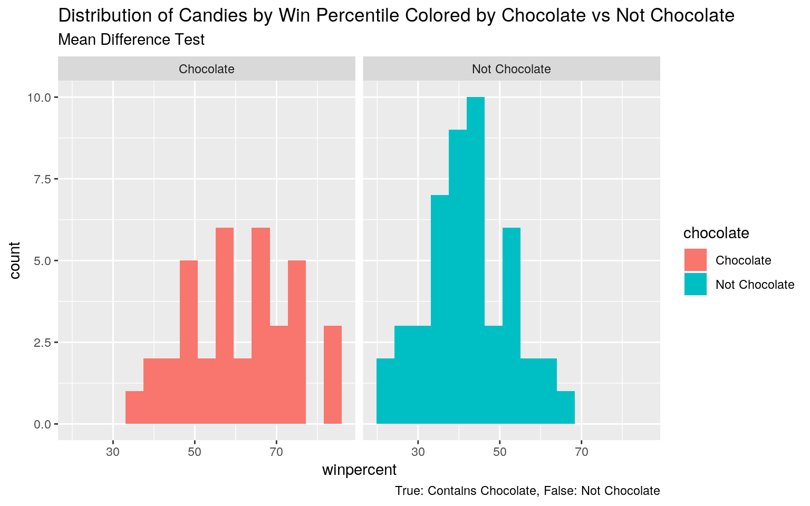
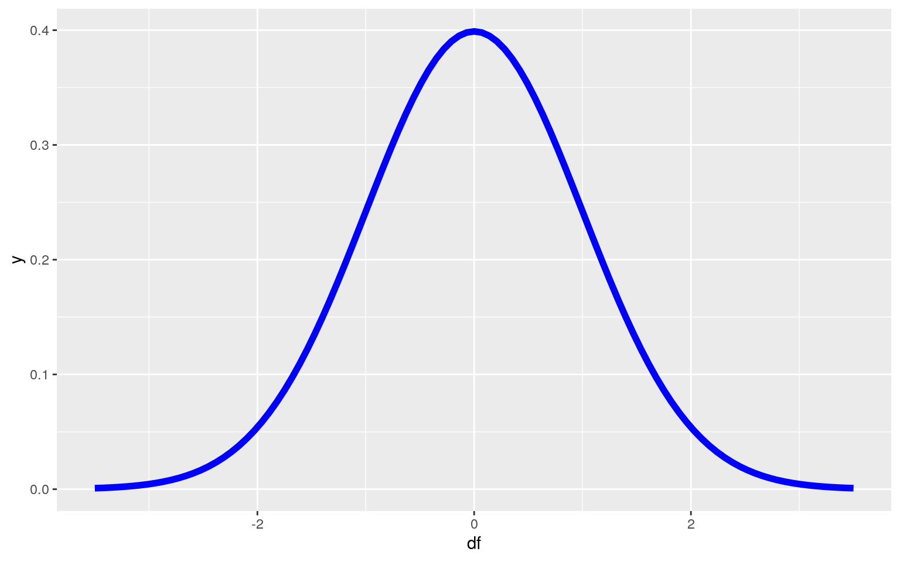
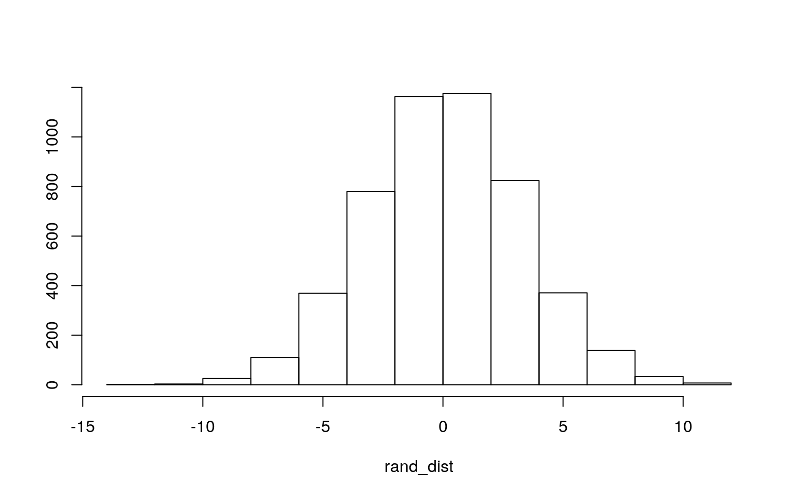
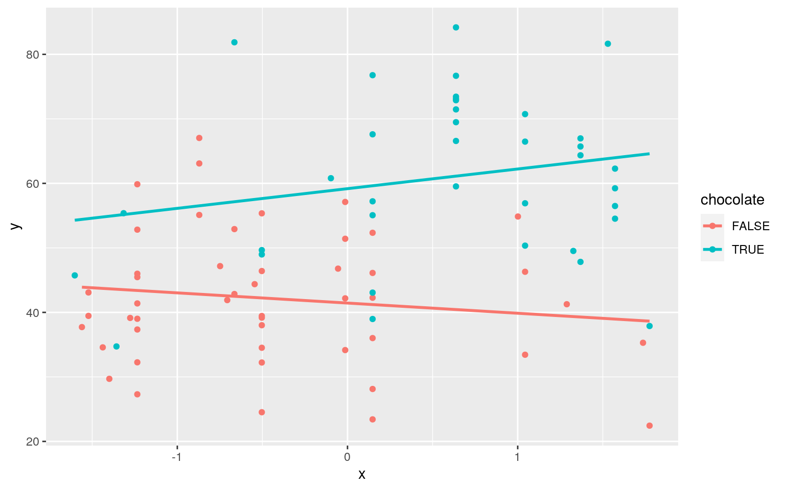
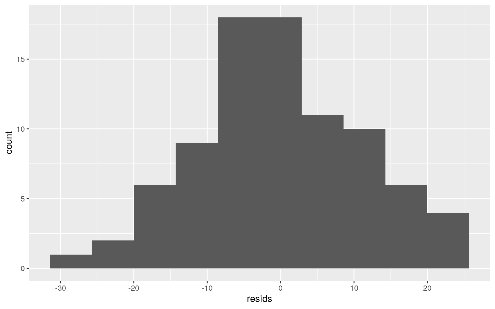
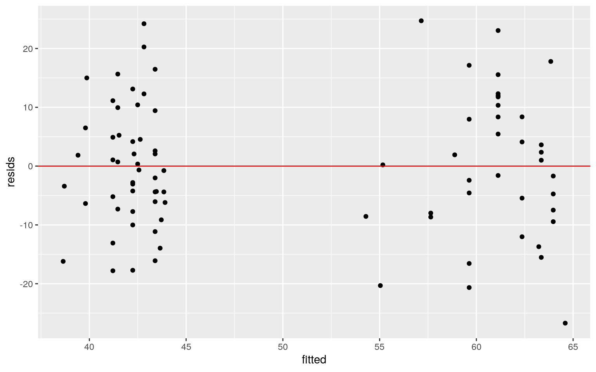
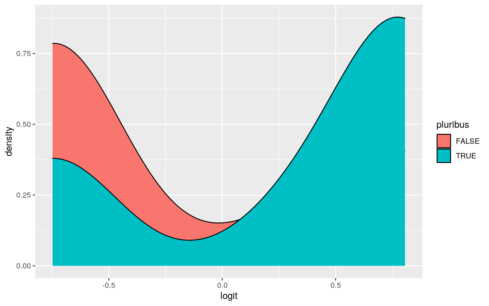
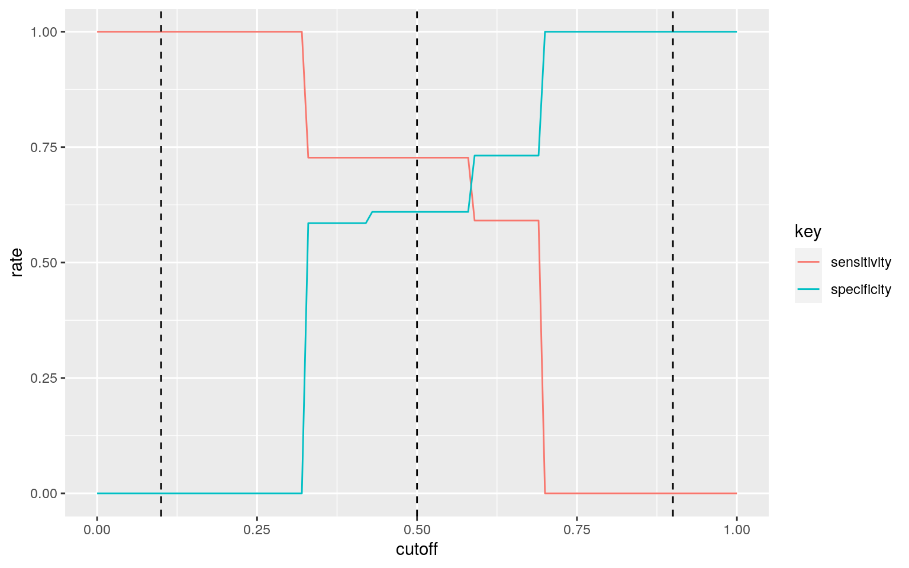
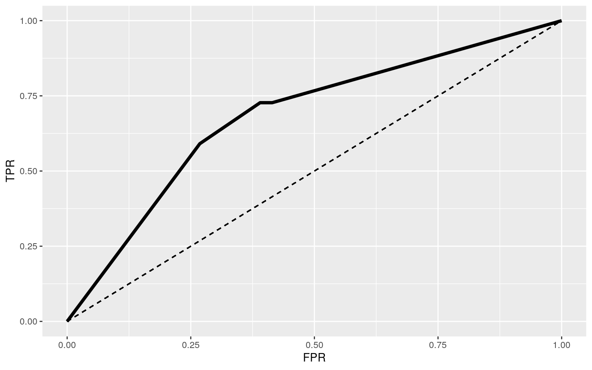
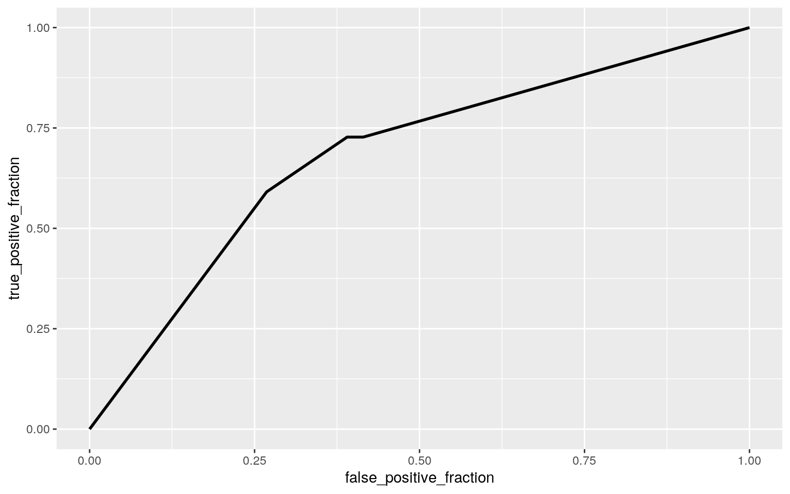

December 2, 2020
Kristen Daniel, kmd3435, Project 2
Modeling
Introduction to Dataset:
#install.packages("fivethirtyeight")
library(fivethirtyeight)
data(candy_rankings)
head(candy_rankings)## # A tibble: 6 x 13
## competitorname chocolate fruity caramel peanutyalmondy
nougat crispedricewafer hard bar
## <chr> <lgl> <lgl> <lgl> <lgl> <lgl> <lgl> <lgl> <lgl>
## 1 100 Grand TRUE FALSE TRUE FALSE FALSE TRUE FALSE TRUE
## 2 3 Musketeers TRUE FALSE FALSE FALSE TRUE FALSE FALSE
TRUE
## 3 One dime FALSE FALSE FALSE FALSE FALSE FALSE FALSE
FALSE
## 4 One quarter FALSE FALSE FALSE FALSE FALSE FALSE FALSE
FALSE
## 5 Air Heads FALSE TRUE FALSE FALSE FALSE FALSE FALSE
FALSE
## 6 Almond Joy TRUE FALSE FALSE TRUE FALSE FALSE FALSE
TRUE
## # … with 4 more variables: pluribus <lgl>, sugarpercent
<dbl>, pricepercent <dbl>, winpercent <dbl>count(candy_rankings)## # A tibble: 1 x 1
## n
## <int>
## 1 85The dataset that I chose to use was the "candy_rankings" dataset, which identifies the particular components/ flavors, texture, and shape of the candy brand name, as well as the sugar content and price percentiles determined comparitively within the dataset and the overall win percentage according to the 269,000 matchups. This dataset was obtained from the "fivethirtyeight" package. The variables included are chocolate, fruity, caramel, peanutyalmondy, nougat, crispedricewafer, hard, bar, and pluribus (whether it comes in package or box of multiple candies) which all have true or false categorization based on whether they fit in that category based on that candy's particular composition, shape, and packaging. The numerical variables include sugarpercent, pricepercent, and winpercent. These variables are explained above with sugar and price percentiles determined comparatively to other candies in the dataset and the win percentages listed by the votes the candy gained from responders according to the 269,000 matchups. These variables all explain the competitorname- which includes the 85 observations of the dataset, the candy names.
- 1. (15 pts) MANOVA
data(candy_rankings)
data <- candy_rankings %>% na.omit()
library(tidyverse)
library(dplyr)Assessing MANOVA assumptions:
library(rstatix)
group <- data$chocolate
DVs <- data %>% select(sugarpercent, pricepercent, winpercent)
#Test multivariate normality for each group (null: assumption met)
sapply(split(DVs,group), mshapiro_test)## FALSE TRUE
## statistic 0.9499378 0.9573033
## p.value 0.03975916 0.1657688#If any p<.05, stop (assumption violated). If not, test homogeneity of covariance matrices
#Box's M test (null: homogeneity of vcov mats assumption met)
#box_m(DVs, group)
#Optionally View covariance matrices for each group
#lapply(split(DVs,group), cov)There are several assumptions to be met for a MANOVA including random samples, independent observations, multivariate normality of dependent variables, equal covariance between each dependent variable and between any two dependent variables, linear relationships among variables, no extreme univariate or multivariate outliers, and no multicollinearity. When running the test for multivariate normality for each group, the not chocolate group return p values of less than 0.05, violating the assumption so multivariate normality is not met for this group. While this is a limitation to using this dataset, we are able to proceed to run the MANOVA, although I will not proceed to test homogeneity of covariance matrices.
MANOVA
manova <- manova(cbind(pricepercent, sugarpercent, winpercent) ~ chocolate, data = data)
summary(manova)## Df Pillai approx F num Df den Df Pr(>F)
## chocolate 1 0.51448 28.611 3 81 1.028e-12 ***
## Residuals 83
## ---
## Signif. codes: 0 '***' 0.001 '**' 0.01 '*' 0.05 '.' 0.1
' ' 1#null: For at least 1 response variable, the means of chocolate and non-chocolate groups are the same.
#alternate: #null: For at least 1 response variable, the means of chocolate and non-chocolate groups differ.Univariate ANOVAs
summary.aov(manova)## Response pricepercent :
## Df Sum Sq Mean Sq F value Pr(>F)
## chocolate 1 1.7468 1.74680 28.364 8.434e-07 ***
## Residuals 83 5.1116 0.06158
## ---
## Signif. codes: 0 '***' 0.001 '**' 0.01 '*' 0.05 '.' 0.1
' ' 1
##
## Response sugarpercent :
## Df Sum Sq Mean Sq F value Pr(>F)
## chocolate 1 0.0729 0.072887 0.9105 0.3427
## Residuals 83 6.6440 0.080049
##
## Response winpercent :
## Df Sum Sq Mean Sq F value Pr(>F)
## chocolate 1 7368.5 7368.5 56.532 5.86e-11 ***
## Residuals 83 10818.5 130.3
## ---
## Signif. codes: 0 '***' 0.001 '**' 0.01 '*' 0.05 '.' 0.1
' ' 1# Univariate ANOVAs (again)
#anova <- aov(pricepercent ~ chocolate, data = data)
#summary(anova)
#anova1 <- aov(sugarpercent ~ chocolate, data = data)
#summary(anova1)
#anova2 <- aov(winpercent ~ chocolate, data = data)
#summary(anova2)data %>% group_by(chocolate) %>% summarize(mean(pricepercent), mean(sugarpercent), mean(winpercent))## # A tibble: 2 x 4
## chocolate `mean(pricepercent)` `mean(sugarpercent)`
`mean(winpercent)`
## <lgl> <dbl> <dbl> <dbl>
## 1 FALSE 0.343 0.453 42.1
## 2 TRUE 0.632 0.512 60.9Post-hoc t-tests (Just for example)
#pairwise.t.test(data$pricepercent, data$chocolate, p.adj = "none")
#pairwise.t.test(data$sugarpercent, data$chocolate, p.adj = "none")
#pairwise.t.test(data$winpercent, data$chocolate, p.adj = "none")1- (0.95^4) #Probabiity of a Type I error## [1] 0.18549380.05/4 #Bonferroni correction ## [1] 0.0125pairwise.t.test(data$pricepercent, data$chocolate, p.adj = "bonferroni")##
## Pairwise comparisons using t tests with pooled SD
##
## data: data$pricepercent and data$chocolate
##
## FALSE
## TRUE 8.4e-07
##
## P value adjustment method: bonferronipairwise.t.test(data$sugarpercent, data$chocolate, p.adj = "bonferroni")##
## Pairwise comparisons using t tests with pooled SD
##
## data: data$sugarpercent and data$chocolate
##
## FALSE
## TRUE 0.34
##
## P value adjustment method: bonferronipairwise.t.test(data$winpercent, data$chocolate, p.adj = "bonferroni")##
## Pairwise comparisons using t tests with pooled SD
##
## data: data$winpercent and data$chocolate
##
## FALSE
## TRUE 5.9e-11
##
## P value adjustment method: bonferroniThe one-way multivariate analysis of variance (MANOVA) was conducted to determine the effect of whether the candy is composed of chocolate (true or false) on the 3 numeric variables, sugar percentile, price percentile, and win percentage. Based on the MANOVA, there was a significant mean difference for at least one of the response variables (significant p-value) found between the two levels of the chocolate variable, those candies composed of chocolate and those without chocolate (Pillai trace= 0.51448, approx F= 28.611, p<0.05).
One-way ANOVAs for each variable were conducted as follow-up tests to the MANOVA, using the Bonferroni method for controlling Type I error rates for multiple comparisons. The univariate ANOVAs for price percentile (F=28.364, p<0.0001) and win percentage (F=56.532, p<0.0001) were both significant (p<0.05). The univariate ANOVA for sugar percentile was not significant (p>0.05). Thus, the chocolate and not chocolate groups differ based on price percentile and win percentage, but not sugar percentile.
Post-hoc analyses were performed conducting pairwise comparisons to determine which groups differ, although with only 2 groups in the analyses this step doesn't exactly make sense. We already know which groups differ so I have shown the code just for example (these will not be utilized in calculating the probability of type 1 error and Bonferroni correction).
Overall I have performed 1 MANOVA and 3 ANOVAs, so the adjusted significance level will be α = 0.05/4 (0.0125). The probability of at least one type I error, unadjusted, is 0.1854938. The Bonferroni corrected significance level is 0.0125 The year is still significant, while the mass is not. When running the post-hoc t-tests with the Bonferroni multiple comparisons correction, the chocolate, and not chocolate groups still differed based on price percentile (p<0.05) and win percentage (p<0.05), but not sugar percentile (p>0.05).
- 2. Randomization Test # Mean Difference test
data2 <- data %>% select(chocolate, winpercent)
head(data2)## # A tibble: 6 x 2
## chocolate winpercent
## <lgl> <dbl>
## 1 TRUE 67.0
## 2 TRUE 67.6
## 3 FALSE 32.3
## 4 FALSE 46.1
## 5 FALSE 52.3
## 6 TRUE 50.3data2$chocolate <- ifelse(data2$chocolate==TRUE, "Chocolate", "Not Chocolate")library(ggplot2)
ggplot(data2, aes(winpercent, fill = chocolate)) + geom_histogram(bins=15) + facet_wrap(~chocolate,ncol=2)+ labs(title = "Distribution of Candies by Win Percentile Colored by Chocolate vs Not Chocolate", subtitle = "Mean Difference Test",caption = "True: Contains Chocolate, False: Not Chocolate" )
test <- data2 %>% group_by(chocolate) %>% summarize(means=mean(winpercent)) %>% summarize(mean_diff=diff(means))
test## # A tibble: 1 x 1
## mean_diff
## <dbl>
## 1 -18.8Plot of Potential Null Distribution (Centered at 0)
df <- data.frame(norms=rnorm(85), unifs=runif(85))
ggplot(df, aes(df)) + geom_line(stat="function", data = data.frame(x = c(-3.5, 3.5)), aes(x), fun = "dnorm", color = "blue", size = 2) # Plot of the Test Statistic
rand_dist<-vector()
for(i in 1:5000){
new<-data.frame(winpercent=sample(data2$winpercent),chocolate=data2$chocolate)
rand_dist[i]<-mean(new[new$chocolate=="Chocolate",]$winpercent)-mean(new[new$chocolate== "Not Chocolate",]$winpercent)}
{hist(rand_dist, main = "", ylab = ""); abline(v=c(-18.77927,18.77927), col="red")}
mean(rand_dist>18.77927|rand_dist< -18.77927) #pvalue <0.05: reject H0!## [1] 0I chose to run a mean difference test to compare a categorical variable with a numeric variable The null hypothesis of this mean test is that the mean win percentage is the same for chocolate candies and non-chocolate candies. The alternate hypothesis is that there is a difference in the mean win percentage for the chocolate candies and the non-chocolate candies. Based on the mean difference test, we can reject the null hypothesis (p<0.05), suggesting that there is a difference in mean price percentiles of the chocolate and non-chocolate groups. There is a difference in the mean win percentage for chocolate and not chocolate candies. The p-value is 0 possibly due to the large effect observed and a finite number of iterations, this value reflects that the probability of observing a mean difference at least as extreme as the one we got under the "randomization distribution" is 0. This is why the mean difference values, 18.77927, and -18.77927, are not seen on the mean difference distribution. The null distribution would be centered around 0, showing no difference in mean win percent between chocolate and non-chocolate candy groups.
- 3. Linear Regression Interpret the coefficient estimates (do not discuss significance) #Linear regression model
#install.packages("interactions")
library(interactions)
library(lmtest)
x <- data$pricepercent-mean(data$pricepercent) #mean-center
x <- scale(x)
y<-data$winpercent
fit <- lm(y~chocolate*x, data= data)
summary(fit)##
## Call:
## lm(formula = y ~ chocolate * x, data = data)
##
## Residuals:
## Min 1Q Median 3Q Max
## -26.705 -7.482 -0.658 8.361 24.715
##
## Coefficients:
## Estimate Std. Error t value Pr(>|t|)
## (Intercept) 41.447 1.848 22.431 < 2e-16 ***
## chocolateTRUE 17.732 2.903 6.108 3.34e-08 ***
## x -1.579 1.927 -0.819 0.415
## chocolateTRUE:x 4.629 2.893 1.600 0.113
## ---
## Signif. codes: 0 '***' 0.001 '**' 0.01 '*' 0.05 '.' 0.1
' ' 1
##
## Residual standard error: 11.37 on 81 degrees of freedom
## Multiple R-squared: 0.4241, Adjusted R-squared: 0.4028
## F-statistic: 19.89 on 3 and 81 DF, p-value: 9.413e-10coef(fit)## (Intercept) chocolateTRUE x chocolateTRUE:x
## 41.446850 17.731668 -1.578762 4.629032The predicted win percentage for a non-chocolate with a price percentile of 0 is 41.447. Controlling for price percentile, win percentage is 17.732 higher for chocolate candies than non-chocolate candies (t= 6.108, df= 81, p=3.34e-08). Controlling for chocolate status, non-chocolate candies show a decrease of 1.579 (-1.579) in the win percentage for every one unit increase in price percentile (t=-0.819, df=81, p=0.415). The slope of the price percentile on win percentage is 4.629 greater for chocolate candies compared to non-chocolate candies (t=1.600, df=81, p=0.113).
Linear Regression Plot
ggplot(data, aes(x=x, y=y, color=chocolate))+geom_point()+geom_smooth(method="lm",se=F)
cor(data$chocolate,data$winpercent)## [1] 0.6365167cor(data$pricepercent, data$winpercent)## [1] 0.3453254y1<-scale(data$winpercent)
sum(x*y1)/sum(x^2) #estimation of slope## [1] 0.3453254Assumptions
ggplot(data, aes(x=x, y=y, color=chocolate))+geom_point()+geom_smooth(method="lm",se=F) #confirms linearity
resids<-fit$residuals
ggplot()+geom_histogram(aes(resids),bins=10) #meets the normality assumption because appears to be a pretty normal distribution
shapiro.test(resids) #confirms normality assumption is met (p>0.05)##
## Shapiro-Wilk normality test
##
## data: resids
## W = 0.9917, p-value = 0.8703fitted <- fit$fitted.values
ggplot()+geom_point(aes(fitted,resids))+geom_hline(yintercept=0, color='red') #meets homoskedasticity assumption because it does not show a fanning pattern and appears relatively constant within chocolate vs not chocolate categories 
bptest(fit) #confirms that homoskedasticity assumption is met (p>0.05)##
## studentized Breusch-Pagan test
##
## data: fit
## BP = 2.6695, df = 3, p-value = 0.4454All assumptions appear to be met based on the ggplots. The original linear regression plot appears to show a relatively linear relationship between x and y. The Shapiro-Wilk test confirms the normality assumption is met with a p-value >0.05 and the Breusch-Pagan test confirms the null hypothesis of homoskedasticity is met (p>0.05).
library(sandwich)
coeftest(fit, vcov=vcovHC(fit))##
## t test of coefficients:
##
## Estimate Std. Error t value Pr(>|t|)
## (Intercept) 41.4468 1.7677 23.4467 < 2.2e-16 ***
## chocolateTRUE 17.7317 3.3689 5.2633 1.135e-06 ***
## x -1.5788 1.8596 -0.8490 0.3984
## chocolateTRUE:x 4.6290 3.4148 1.3556 0.1790
## ---
## Signif. codes: 0 '***' 0.001 '**' 0.01 '*' 0.05 '.' 0.1
' ' 1summary(fit)$r.sq## [1] 0.4241398With the robust standard errors, both the t values and the p-values stayed about the same for the chocolate variable (t= 5.2633, p=1.135e-06) and the price percentile variable (t=-0.8490, p=0.3984). The t value and p-value for the interaction between the chocolate variable and the price percentile variable also stayed relatively the same (t=1.3556, p=0.1790). Insignificant changes in t values and p-values fits with our conclusion that assumptions were met originally. The proportion of the variation in the outcome (win percentage) explained by this model is 0.4241398.
- 4. Bootstrapping # Regression with Bootstrapped Standard Errors Calculated
fit <- lm(winpercent~chocolate*pricepercent, data= data)
bootstrap_dat <- sample_frac(data, replace=T)
samp_dist<-replicate(5000, {
bootstrap_dat<-sample_frac(data, replace=T)
fit_boot<-lm(winpercent~chocolate*pricepercent,data=bootstrap_dat)
coef(fit_boot)
})
samp_dist%>%t%>%as.data.frame%>%summarize_all(sd) #estimated SEs## (Intercept) chocolateTRUE pricepercent
chocolateTRUE:pricepercent
## 1 2.500451 7.166732 6.236165 11.56408summary(fit) #original SEs##
## Call:
## lm(formula = winpercent ~ chocolate * pricepercent, data
= data)
##
## Residuals:
## Min 1Q Median 3Q Max
## -26.705 -7.482 -0.658 8.361 24.715
##
## Coefficients:
## Estimate Std. Error t value Pr(>|t|)
## (Intercept) 44.038 2.836 15.526 <2e-16 ***
## chocolateTRUE 10.136 5.858 1.730 0.0874 .
## pricepercent -5.525 6.744 -0.819 0.4150
## chocolateTRUE:pricepercent 16.200 10.123 1.600 0.1134
## ---
## Signif. codes: 0 '***' 0.001 '**' 0.01 '*' 0.05 '.' 0.1
' ' 1
##
## Residual standard error: 11.37 on 81 degrees of freedom
## Multiple R-squared: 0.4241, Adjusted R-squared: 0.4028
## F-statistic: 19.89 on 3 and 81 DF, p-value: 9.413e-10coeftest(fit, vcov=vcovHC(fit)) #robust SEs##
## t test of coefficients:
##
## Estimate Std. Error t value Pr(>|t|)
## (Intercept) 44.0375 2.6098 16.8738 <2e-16 ***
## chocolateTRUE 10.1357 7.4146 1.3670 0.1754
## pricepercent -5.5252 6.5080 -0.8490 0.3984
## chocolateTRUE:pricepercent 16.2002 11.9509 1.3556 0.1790
## ---
## Signif. codes: 0 '***' 0.001 '**' 0.01 '*' 0.05 '.' 0.1
' ' 1#install.packages("lmtest")
library(lmtest)
fit_boot<-lm(winpercent~chocolate*pricepercent,data=bootstrap_dat)
summary(fit_boot) #bootstrapped SEs##
## Call:
## lm(formula = winpercent ~ chocolate * pricepercent, data
= bootstrap_dat)
##
## Residuals:
## Min 1Q Median 3Q Max
## -23.493 -7.924 -1.707 9.684 24.061
##
## Coefficients:
## Estimate Std. Error t value Pr(>|t|)
## (Intercept) 44.097 2.754 16.015 < 2e-16 ***
## chocolateTRUE 18.657 6.341 2.942 0.00425 **
## pricepercent -5.095 6.748 -0.755 0.45243
## chocolateTRUE:pricepercent 4.535 11.253 0.403 0.68802
## ---
## Signif. codes: 0 '***' 0.001 '**' 0.01 '*' 0.05 '.' 0.1
' ' 1
##
## Residual standard error: 11.51 on 81 degrees of freedom
## Multiple R-squared: 0.4294, Adjusted R-squared: 0.4082
## F-statistic: 20.32 on 3 and 81 DF, p-value: 6.546e-10While the original SEs and the robust SEs were relatively the same with the robust SEs being slightly lower for price percentile and slightly higher for the interaction, the robust SE for the variable chocolate was substantially higher than the original SE for chocolate. For the bootstrapped SEs, the SE values are relatively similar to the original and robust SEs but most similar to the original SEs with a slightly lower bootstrapped SE for the chocolate variable and slightly higher bootstrapped SEs for the price percentile variable and the interaction (although not much variation is observed). The p-values for the bootstrapped model are all not significant (disregarding intercept), following the observed p-values in the original and robust models which are also not significant.
- 5. Logistic Regression
class_diag<-function(prob,truth){
tab<-table(factor(prob>.5,levels=c("FALSE","TRUE")),truth)
acc=sum(diag(tab))/sum(tab)
sens=tab[2,2]/colSums(tab)[2]
spec=tab[1,1]/colSums(tab)[1]
ppv=tab[2,2]/rowSums(tab)[2]
if(is.numeric(truth)==FALSE & is.logical(truth)==FALSE) truth<-as.numeric(truth)-1
#CALCULATE EXACT AUC
ord<-order(prob, decreasing=TRUE)
probs <- prob[ord]; truth <- truth[ord]
TPR=cumsum(truth)/max(1,sum(truth))
FPR=cumsum(!truth)/max(1,sum(!truth))
dup<-c(probs[-1]>=probs[-length(probs)], FALSE)
TPR<-c(0,TPR[!dup],1); FPR<-c(0,FPR[!dup],1)
n <- length(TPR)
auc<- sum( ((TPR[-1]+TPR[-n])/2) * (FPR[-1]-FPR[-n]) )
data.frame(acc,sens,spec,ppv,auc)
}Logistic Regression Model on a Binary Variable
fit_binary<-glm(pluribus~chocolate+fruity, data = data, family="binomial")
coeftest(fit_binary)##
## z test of coefficients:
##
## Estimate Std. Error z value Pr(>|z|)
## (Intercept) 0.34132 0.58700 0.5815 0.5609
## chocolateTRUE -1.08866 0.66951 -1.6261 0.1039
## fruityTRUE 0.46391 0.66906 0.6934 0.4881exp(coef(fit_binary))## (Intercept) chocolateTRUE fruityTRUE
## 1.4067977 0.3366664 1.5902822Based on the logistic regression, the odds of being pluribus (ie multiple in a package or box) if not chocolate or fruity is 1.4067977. The odds of being pluribus increases by a factor of 0.3366664 if it is chocolate when controlling for fruity (not significant). The odds of being pluribus increases by a factor of 1.5902822 if it is fruity when controlling for chocolate (not significant). None of these variables, chocolate or fruity, have a significant impact on the odds of a candy being pluribus (p>0.05).
data$prob<-predict(fit_binary,type="response") #predicted probabilities
table(predict= as.numeric(data$prob>0.5), truth = data$pluribus) %>% addmargins()## truth
## predict FALSE TRUE Sum
## 0 25 12 37
## 1 16 32 48
## Sum 41 44 85class_diag(data$prob, data$pluribus)## acc sens spec ppv auc
## TRUE 0.6705882 0.7272727 0.6097561 0.6666667 0.6829268(25+32)/85 #ACC## [1] 0.670588232/44 #TPR## [1] 0.727272725/41 #TNR## [1] 0.609756132/48 #PPV## [1] 0.66666670.6829268 #AUC## [1] 0.6829268The sensitivity, or true positive rate (TPR), is 0.7272727 and the specificity, or true negative rate (TNR), is 0.6097561. This indicates that the model is slightly better at correctly classifying whether a pluribus candy is pluribus (TPR) than correctly classifying those that are not pluribus are not (TNR). The precision (PPV) is 0.6666667, which is the proportion of those classified as pluribus actually being pluribus. With an in-sample AUC (area under the curve) of 0.7857143, this model is a fair model for classification, and 0.7857143 is the probability that a randomly selected candy that is classified has a higher predicted probability than a randomly selected candy that is not classified as pluribus. The accuracy is 0.6705882, the proportion of correctly classified candies, is low showing that not many candies were correctly classified as pluribus versus not pluribus.
data$logit<-predict(fit_binary,type="link")
data %>% ggplot(aes(logit,fill=pluribus))+geom_density()+xlab("logit") #density of log-odds (logit)
sens<-function(p,data=data, y=pluribus) mean(data[data$pluribus==1,]$prob>p)
spec<-function(p,data=data, y=pluribus) mean(data[data$pluribus==0,]$prob<p)
sensitivity<-sapply(seq(0,1,.01),sens,data)
specificity<-sapply(seq(0,1,.01),spec,data)
ROC1<-data.frame(sensitivity,specificity,cutoff=seq(0,1,.01))
ROC1%>%gather(key,rate,-cutoff)%>%ggplot(aes(cutoff,rate,color=key))+geom_path()+ geom_vline(xintercept=c(.1,.5,.9),lty=2)
ROC1$TPR<-sensitivity
ROC1$FPR<-1-specificity
ROC1%>%ggplot(aes(FPR,TPR))+geom_path(size=1.5)+geom_segment(aes(x=0,y=0,xend=1,yend=1),lty=2)+ scale_x_continuous(limits = c(0,1))
#install.packages("plotROC")
library(plotROC)
ROCplot<- data %>% ggplot()+geom_roc(aes(d=pluribus, m=prob), n.cuts=0)
ROCplot
calc_auc(ROCplot) #AUC## PANEL group AUC
## 1 1 -1 0.6829268The ROC curve allows for the visualization trade-off between sensitivity and specificity. The AUC is 0.3203991, which means that this model is terrible at predicting if pluribus.
- 6. LASSO # Logistic Regression on All Other Variables
fit_all <- glm(pluribus~chocolate+fruity+caramel+peanutyalmondy+nougat+crispedricewafer+hard+bar+pricepercent+sugarpercent+winpercent, data=data, family="binomial") #Including all variables except competitor name, which made the output large and confusing
summary(fit_all)##
## Call:
## glm(formula = pluribus ~ chocolate + fruity + caramel +
peanutyalmondy +
## nougat + crispedricewafer + hard + bar + pricepercent +
sugarpercent +
## winpercent, family = "binomial", data = data)
##
## Deviance Residuals:
## Min 1Q Median 3Q Max
## -2.11252 -0.00018 0.38199 0.78808 1.35098
##
## Coefficients:
## Estimate Std. Error z value Pr(>|z|)
## (Intercept) 8.029e-01 1.322e+00 0.607 0.544
## chocolateTRUE -5.981e-02 1.105e+00 -0.054 0.957
## fruityTRUE -4.726e-01 9.514e-01 -0.497 0.619
## caramelTRUE -1.845e+00 1.112e+00 -1.659 0.097 .
## peanutyalmondyTRUE -1.846e+00 1.253e+00 -1.473 0.141
## nougatTRUE 1.354e+01 5.273e+03 0.003 0.998
## crispedricewaferTRUE 1.405e+01 2.871e+03 0.005 0.996
## hardTRUE -1.211e+00 7.487e-01 -1.618 0.106
## barTRUE -3.404e+01 3.798e+03 -0.009 0.993
## pricepercent 1.150e+00 1.398e+00 0.823 0.411
## sugarpercent 1.334e+00 1.143e+00 1.167 0.243
## winpercent -1.684e-04 2.982e-02 -0.006 0.995
## ---
## Signif. codes: 0 '***' 0.001 '**' 0.01 '*' 0.05 '.' 0.1
' ' 1
##
## (Dispersion parameter for binomial family taken to be 1)
##
## Null deviance: 117.729 on 84 degrees of freedom
## Residual deviance: 70.591 on 73 degrees of freedom
## AIC: 94.591
##
## Number of Fisher Scoring iterations: 18class_diag<-function(probs,truth){
tab<-table(factor(probs>.5,levels=c("FALSE","TRUE")),truth)
acc=sum(diag(tab))/sum(tab)
sens=tab[2,2]/colSums(tab)[2]
spec=tab[1,1]/colSums(tab)[1]
ppv=tab[2,2]/rowSums(tab)[2]
if(is.numeric(truth)==FALSE & is.logical(truth)==FALSE) truth<-as.numeric(truth)-1
#CALCULATE EXACT AUC
ord<-order(probs, decreasing=TRUE)
probs <- probs[ord]; truth <- truth[ord]
TPR=cumsum(truth)/max(1,sum(truth))
FPR=cumsum(!truth)/max(1,sum(!truth))
dup<-c(probs[-1]>=probs[-length(probs)], FALSE)
TPR<-c(0,TPR[!dup],1); FPR<-c(0,FPR[!dup],1)
n <- length(TPR)
auc<- sum( ((TPR[-1]+TPR[-n])/2) * (FPR[-1]-FPR[-n]) )
data.frame(acc,sens,spec,ppv,auc)
}
probs<-predict(fit_all,type="response") #predicted probabilities
table(predict= as.numeric(probs>0.5), truth = data$pluribus) %>% addmargins()## truth
## predict FALSE TRUE Sum
## 0 27 5 32
## 1 14 39 53
## Sum 41 44 85class_diag(probs, data$pluribus)## acc sens spec ppv auc
## TRUE 0.7764706 0.8863636 0.6585366 0.7358491 0.8564302Using the logistic model that utilizes all variables (competitor name was discluded due to long, skewed results), the accuracy is 0.7764706, the sensitivity is 0.8863636, the specificity is 0.6585366, the positive predictive value is 0.7358491, and the area under the curve is 0.8564302. The accuracy is higher than that of the previous linear model but the proportion of correctly classified candies is still fairly low, showing that not many candies were correctly classified as pluribus versus not pluribus. The sensitivity is relatively high, higher than the specificity, indicating that the model is significantly better at correctly classifying whether a pluribus candy is pluribus (TPR) than correctly classifying those that are not pluribus are not (TNR). The precision (PPV) is 0.7358491, better than that of the previous linear model, indicating a higher proportion of those candies classified as pluribus actually being pluribus. This model is considered to be a good fit due to a good in-sample AUC value, indicating a 0.8564302 probability that a randomly selected candy that is classified has a higher predicted probability than a randomly selected candy that is not classified as pluribus.
10-Fold CV
set.seed(1234)
k=10
data1<-data[sample(nrow(data)),]
folds<-cut(seq(1:nrow(data)),breaks=k,labels=F)
diags<-NULL
for(i in 1:k){
train<-data1[folds!=i,]
test<-data1[folds==i,]
truth1<-test$pluribus
fit_all<- glm(pluribus~chocolate+fruity+caramel+peanutyalmondy+nougat+crispedricewafer+hard+bar+pricepercent+sugarpercent+winpercent, data=data, family="binomial")
prob1<-predict(fit_all,newdata = test,type="response")
diags<-rbind(diags,class_diag(prob1,truth1))
}
summarize_all(diags,mean)## acc sens spec ppv auc
## 1 0.7763889 0.9033333 0.6233333 0.7415476 0.8527778After 10-fold CV, the ACC value stayed the same (0.7763889), the sensitivity went up (0.9033333), specificity went down a little (0.6233333), positive predictive value increased slightly (0.7415476), and AUC decreased slightly (0.8527778) when compared with the in-sample metrics. This model would also fall into the category of a good fit due to its AUC value, 0.8527778, an overall AUC value that can be extrapolated from in-sample to out of the sample.
LASSO
#install.packages("glmnet")
library(glmnet)
x<-model.matrix(fit_all)
y<-as.matrix(data$pluribus)
cv<-cv.glmnet(x,y,family = 'binomial')
lasso1<-glmnet(x,y,family = 'binomial',lambda=cv$lambda.1se)
coef(lasso1)## 13 x 1 sparse Matrix of class "dgCMatrix"
## s0
## (Intercept) 0.4339064
## (Intercept) .
## chocolateTRUE .
## fruityTRUE .
## caramelTRUE .
## peanutyalmondyTRUE .
## nougatTRUE .
## crispedricewaferTRUE .
## hardTRUE .
## barTRUE -1.5543753
## pricepercent .
## sugarpercent .
## winpercent .10-Fold CV following LASSO
set.seed(1234)
k=10
data1<-data[sample(nrow(data)),]
folds<-cut(seq(1:nrow(data)),breaks=k,labels=F)
diags<-NULL
for(i in 1:k){
train<-data1[folds!=i,]
test<-data1[folds==i,]
truth3<-test$pluribus
fit_new<- glm(pluribus~bar, data=data, family="binomial")
prob3<-predict(fit_new,newdata = test,type="response")
diags<-rbind(diags,class_diag(prob3,truth3))
}
summarize_all(diags,mean)## acc sens spec ppv auc
## 1 0.7666667 1 0.495 0.6783333 0.7475Only the variable bar is retained when performing LASSO on the fit_all model as it is the best predictor (only one with a coefficient). The ACC, SPEC, PPV, and AUC values are lower when compared to the logistic regression values from above (0.7666667, 0.495, 0.6783333, 0.7475- respectively). However, the sensitivity is higher (1) when compared to the sensitivity value in the logistic regressions above. This model would be considered only a fair fit due to a slightly diminished out of sample AUC value (0.7475) from the original model and all-inclusive model, which may indicate over-fitting (not much change so the original model likely not overfitting too much).
## R version 3.6.1 (2019-07-05)
## Platform: x86_64-pc-linux-gnu (64-bit)
## Running under: Ubuntu 18.04.5 LTS
##
## Matrix products: default
## BLAS: /stor/system/opt/R/R-3.6.1/lib/R/lib/libRblas.so
## LAPACK:
/stor/system/opt/R/R-3.6.1/lib/R/lib/libRlapack.so
##
## locale:
## [1] LC_CTYPE=en_US.UTF-8 LC_NUMERIC=C
LC_TIME=en_US.UTF-8
## [4] LC_COLLATE=en_US.UTF-8 LC_MONETARY=en_US.UTF-8
LC_MESSAGES=en_US.UTF-8
## [7] LC_PAPER=en_US.UTF-8 LC_NAME=C LC_ADDRESS=C
## [10] LC_TELEPHONE=C LC_MEASUREMENT=en_US.UTF-8
LC_IDENTIFICATION=C
##
## attached base packages:
## [1] stats graphics grDevices utils datasets methods base
##
## other attached packages:
## [1] glmnet_4.0-2 Matrix_1.2-17 plotROC_2.2.1
sandwich_2.5-1
## [5] lmtest_0.9-38 zoo_1.8-8 interactions_1.1.3
rstatix_0.6.0
## [9] fivethirtyeight_0.6.1 forcats_0.5.0 stringr_1.4.0
dplyr_1.0.1
## [13] purrr_0.3.4 readr_1.3.1 tidyr_1.1.1 tibble_3.0.3
## [17] ggplot2_3.3.2 tidyverse_1.3.0 knitr_1.29
##
## loaded via a namespace (and not attached):
## [1] nlme_3.1-148 fs_1.5.0 lubridate_1.7.9 httr_1.4.2
tools_3.6.1
## [6] backports_1.1.8 utf8_1.1.4 R6_2.4.1 DBI_1.1.0
mgcv_1.8-31
## [11] colorspace_1.4-1 withr_2.2.0 tidyselect_1.1.0
curl_4.3 compiler_3.6.1
## [16] cli_2.0.2 rvest_0.3.6 xml2_1.3.2 labeling_0.3
bookdown_0.20
## [21] scales_1.1.1 digest_0.6.25 foreign_0.8-71
rmarkdown_2.3 rio_0.5.16
## [26] pkgconfig_2.0.3 htmltools_0.5.0 dbplyr_1.4.4
rlang_0.4.7 readxl_1.3.1
## [31] rstudioapi_0.11 shape_1.4.5 farver_2.0.3
generics_0.0.2 jsonlite_1.7.0
## [36] zip_2.1.0 car_3.0-8 magrittr_1.5 Rcpp_1.0.5
munsell_0.5.0
## [41] fansi_0.4.1 abind_1.4-5 lifecycle_0.2.0
stringi_1.5.3 yaml_2.2.1
## [46] carData_3.0-4 plyr_1.8.6 grid_3.6.1 blob_1.2.1
crayon_1.3.4
## [51] lattice_0.20-41 haven_2.3.1 splines_3.6.1
jtools_2.1.0 pander_0.6.3
## [56] hms_0.5.3 pillar_1.4.6 codetools_0.2-16
reprex_0.3.0 glue_1.4.2
## [61] evaluate_0.14 blogdown_0.20 data.table_1.13.0
modelr_0.1.8 vctrs_0.3.2
## [66] foreach_1.5.0 cellranger_1.1.0 gtable_0.3.0
assertthat_0.2.1 xfun_0.16
## [71] openxlsx_4.1.5 broom_0.7.0 survival_3.2-3
iterators_1.0.12 ellipsis_0.3.1## [1] "2020-12-09 12:12:04 CST"## sysname release
## "Linux" "4.15.0-117-generic"
## version nodename
## "#118-Ubuntu SMP Fri Sep 4 20:02:41 UTC 2020"
"educcomp01.ccbb.utexas.edu"
## machine login
## "x86_64" "unknown"
## user effective_user
## "kmd3435" "kmd3435"